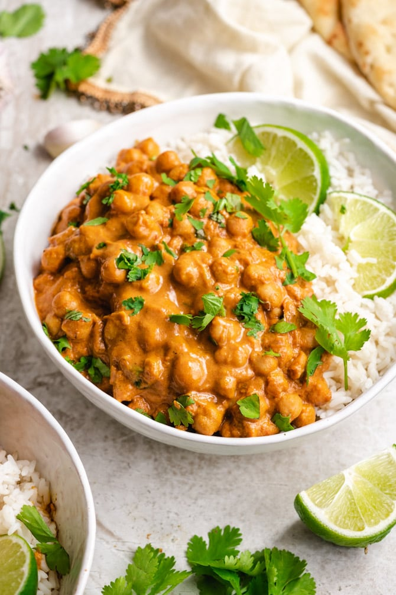

Home
Chickpea Curry

Description
This easy Chickpea Curry is super delicious, satisfying and can easily make it to the top, on your weekly menu.
This Coconut Chickpea Curry comes together quick, with little effort and can satisfy everyone with different dietary needs – vegan, vegetarian, gluten-free or high-protein.
Packed with protein, vegetables, and spices, it will tantalize your taste buds and leave everyone’s bellies full and happy.
Ingredients
- Onions and oil: This recipe starts with two minced onions cooked in vegetable oil.
- Garlic and ginger:Fresh garlic and fresh ginger lend bold flavor.
- Dried seasonings:Seasoned with whole cloves, cinnamon sticks, cumin, coriander, salt, cayenne pepper, and turmeric.
- Chickpeas: Of course, you’ll need chickpeas! You'll need two cans, including the liquid.
- Cilantro:Fresh cilantro gives the dish a pop of color and flavor.
Directions
- Gather the ingredients.
- Heat oil in a large frying pan over medium heat. Add onion; cook and stir until onions are tender, about 3 to 5 minutes.
- Stir in garlic, ginger, cloves, cinnamon, cumin, coriander, salt, cayenne, and turmeric. Cook for 1 minute over medium heat, stirring constantly.
- Mix in chickpeas and their liquid. Continue to cook and stir until heated through. Remove from heat. Stir in cilantro just before serving, reserving 1 tablespoon for garnish.
- Enjoy!